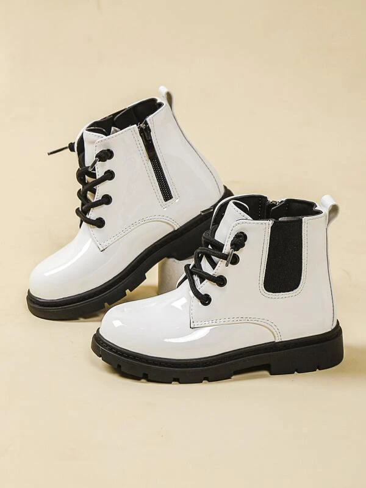
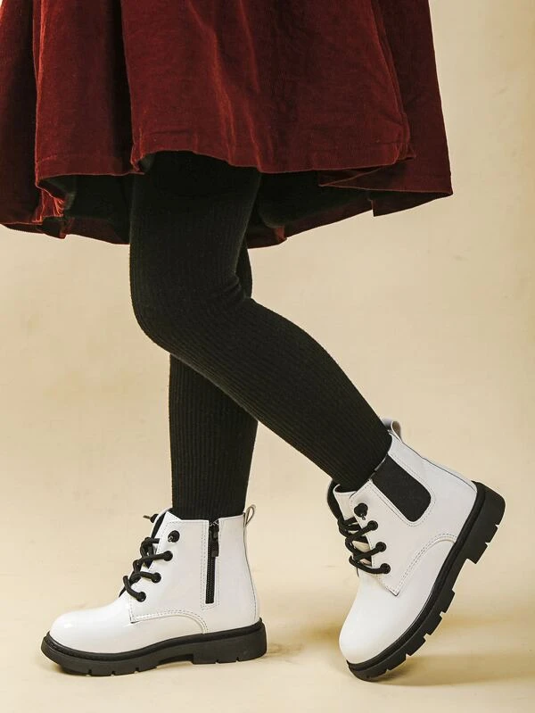
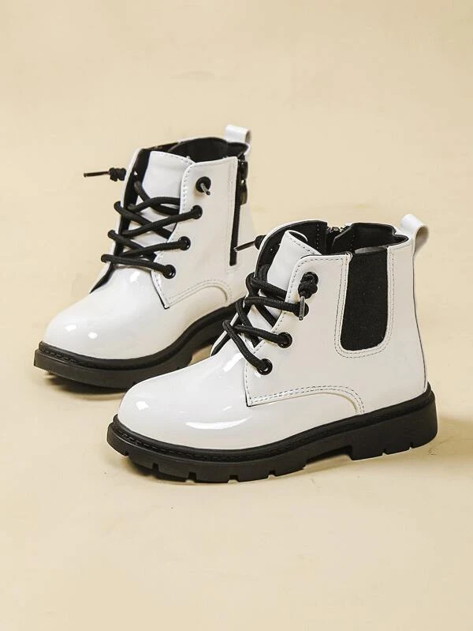
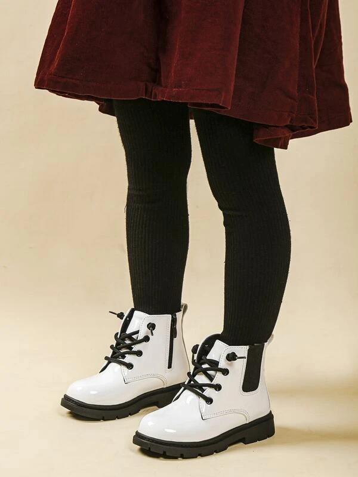

Bottines blanche
Ces bottines Chelsea blanches sont idéales pour les petites filles qui aiment le style classique et élégant. Elles sont fabriquées en cuir PU, un matériau résistant et facile à nettoyer. Elles ont un zip sur le côté pour les enfiler et les retirer facilement. Elles ont un bout rond et une semelle en caoutchouc qui assure une bonne adhérence au sol. Leur couleur unie se marie avec toutes les tenues. Ces bottines sont confortables et doublées en cuir PU, avec une semelle intérieure en étoffe qui absorbe la transpiration.